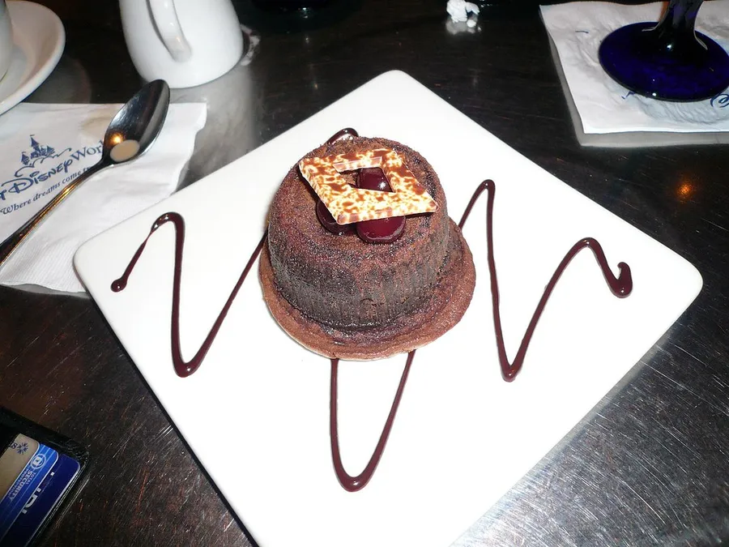

Soufflé al cioccolato
Cuore fondente, anche cioccolato e pistacchio. È il dolce più venduto della casa: si cuoce al momento ed esce uguale tutte le sere.
Pezzature
cioccolatocioccolato e pistacchio
Provenienza
Chiedi disponibilità e prezzo
Martinucci